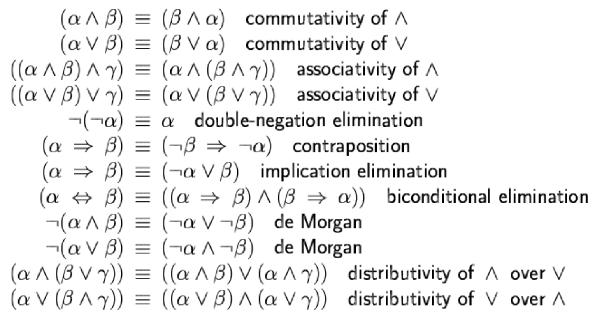

COMPSCI 761 Notes
Course outline sorted out by myself for quick revision
University of Auckland COMPSCI 761 - Artificial Intelligence
Search
Problem
- Problem Space
- states
- actions
- Problem
- initial state
- goal
- Problem Solving - search for a path in a graph
- Problem Types
- Single-state problem
- Deterministic, fully observable
- Agent knows exactly which state it will be in; solution is a sequence
- Sensorless problem (conformant problem)
- Non-observable
- Agent may have no idea where it is; solution (if any) is a sequence
- Contingency problem
- Nondeterministic and/or partially observable
- Percepts provide new information about current state
- Solution is a contingent plan or a policy
- Often interleaves search & execution
- Exploration problem (online problem)
- Unknown state space
- Unknown state space
- Single-state problem
Uninformed Search
- BFS
- DFS
- Iterative Deepening Search
Tree Search + Closed List = Graph Search
Informed Search
- Best-First Search
- Greedy
- A*
- Iterative Deepening A*
- Weighted A*
- Heuristics
- Bidirectional Heuristic Search
- Front-to-back (e.g. MM, NBS, GBFHS)
- Front-to-front
- Perimeter Search
Local Search
- Hill Climbing (best child)
- Stochastic Hill Climbing
- First Choice
- Random Walking
- Random Restart
- Local Beam Search (k best children)
- Stochastic Beam Search
- Genetic Algorithm
- Simulated Annealing
Adversarial Search
- Minimax
- Alpha-beta Pruning
- Expectimax
- Look-ahead Tree
- Monte-Carlo Tree Search
- Upper Confidence Bound
- Upper Confidence Bound
Planning
- Languages: State, Goal, State Update
- Predicates: positive/negative, fluent/static, primitive/derived, object level/meta level
Constraint Satisfaction Problem (CSP)
- Variables, domains, constraints
- Backtracking Search (uninformed) - DFS for CSP
- Heuristics (informed)
- Constraint propagation
- Forward checking
- Arc consistency
- Local Search for CSP
Logic
- Entailment
- Inference
- Propositional Logic 命题逻辑
- Horn Clause/Form 霍恩子句
- Modus Ponens 肯定前件
- Resolution 归结
- Forward/Backward Chaining
- First Order Logic
- Unification
- Generalized Modus Ponens
Classic AI
- Expert System (KBS)
- Knowledge Elicitation
- Knowledge Engineering
- Ontology
- Conceptual Graph
- Knowledge Interchange Format (KIF)
- Case-Based Reasoning (CBR)